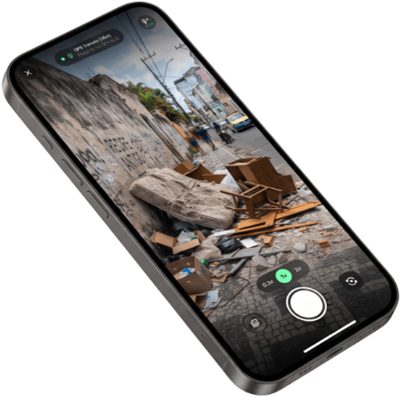

Transforme relatos em dados acionáveis para limpar a cidade
Plataforma de Ciência Cidadã e Zeladoria Urbana Inteligente. Denúncia anônima em 3 toques e roteirização sem duplicidades.
Tempo médio para o cidadão registrar um descarte irregular sem cadastro.
Remoção automática de EXIF pessoal no dispositivo antes do envio.
Pronto para escalar em B2G e B2B
Entrevistas com moradores (Persona Marcos) e gestores públicos (Persona Juliana) comprovaram por que o 156 tradicional e os grupos de WhatsApp falham.
Chega de burocracia para o cidadão e cegueira espacial para a prefeitura.
Do celular do morador à rota do caminhão em 3 toques
Transferimos 100% da carga cognitiva para o Web Worker no celular e para o motor espacial PostGIS. Clique nas etapas abaixo:

De 120 relatos populares a 8 pontos críticos priorizados
Interface de alta legibilidade com Regra dos 2 Cliques, sincronia bidirecional mapa-lista e comprovação fotográfica obrigatória de limpeza.
Calcule a economia na operação da sua cidade
Ajuste o volume mensal de ocorrências de descarte irregular recebidas pela prefeitura ou concessionária e veja o impacto da deduplicação espacial.
Premissas: Taxa média de deduplicação espacial de 78% (PostGIS 25m), economia de 8 min de triagem por chamado duplicado e redução de 24% em deslocamentos improdutivos de frota.
Do Piloto a Custo Zero à Escala Municipal
Arquitetura desenhada para validar em bairros sem barreiras orçamentárias e escalar com contratos SaaS B2G/B2B e API White-Label.
Piloto Cidadão
Ideal para validação em bairros, coletivos comunitários e pesquisa acadêmica.
- ✓ PWA Cidadão em 3 toques (sem login)
- ✓ Deduplicação espacial PostGIS + dHash
- ✓ Painel Gestor MapLibre + OpenStreetMap
- ✓ Exportação aberta GeoJSON / CSV
- ✓ Até 7.100 fotos WebP no Free Tier
Prefeitura Inteligente
Operação completa de zeladoria urbana com isolamento Multi-Tenant e SLA.
- ✓ Tudo do Piloto + Multi-Tenant isolado
- ✓ Kit de Placas QR Code para pontos crônicos
- ✓ Web Push "Local Limpo" ilimitado
- ✓ Relatórios mensais de ROI e reincidência
- ✓ Suporte técnico e implantação assistida
White-Label & IA 156
Integre nossa inteligência ao aplicativo 156 oficial já existente no município.
- ✓ API Headless & SDK WebView "Câmera 156"
- ✓ IA de Cubagem (m³) e tipologia de resíduo
- ✓ Roteirização dinâmica de frota (OR-Tools)
- ✓ Webhook bidirecional com sistemas legados
- ✓ Nuvem dedicada AWS / GCP com alta escala
Anonimato Nativo na Borda
Nenhum dado pessoal (CPF, nome, telefone) é coletado. Metadados EXIF rastreáveis são removidos no navegador e dispositivos usam hash HMAC-SHA256.
Protocolo Científico Verificável
Inspirado no protocolo NASA GLOBE Observer, cada registro coleta coordenada WGS84, acurácia métrica GNSS, escala volumétrica e consenso multi-observador.
Funciona Offline em Córregos
Compressão WebP ~140KB em Web Worker (economizando 97% de storage) e fila local no IndexedDB para fundos de vale sem sinal 4G.